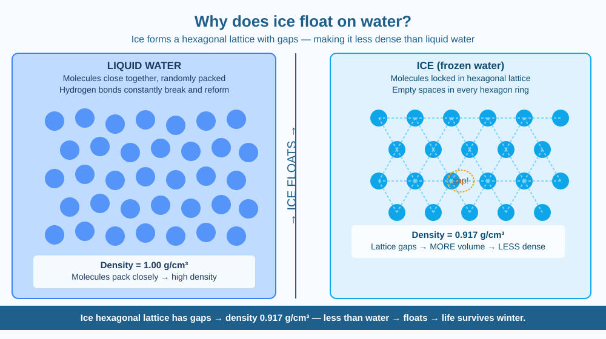

By the end of this lesson, you should be able to explain why ice is less dense than liquid water, describe water's hexagonal crystal structure, and predict what would happen to aquatic life if ice sank instead of floated.
Almost every substance in the universe is denser as a solid than as a liquid. Iron is denser than molten iron. Wax is denser than melted wax. But water does something strange: its solid form — ice — is actually less dense than liquid water. This is why ice cubes float in your glass of nimbu pani. Why does water break the rules?
Everything depends on how water molecules arrange themselves when they freeze.
Water molecules and hydrogen bonds. A water molecule (H₂O) has one oxygen atom bonded to two hydrogen atoms, set at an angle of about 104°. The oxygen side of the molecule has a slight negative charge, and the hydrogen sides have a slight positive charge. This makes water molecules attract each other in a special way called hydrogen bonding — the slightly positive hydrogen of one molecule is attracted to the slightly negative oxygen of a neighbouring molecule.
In liquid water: Hydrogen bonds are constantly forming and breaking as molecules jostle past each other. The molecules are close together and reasonably disorganised, giving liquid water a density of about 1.00 g/cm³ at room temperature.
In ice (solid water): When water cools to 0°C and freezes, the hydrogen bonds lock the molecules into a rigid, orderly hexagonal lattice — a pattern shaped like a repeating honeycomb or snowflake. This arrangement is spacious. The regular hexagonal structure has empty spaces in the middle of each ring that are not present in the disorganised liquid. These gaps mean ice takes up more volume than the same mass of liquid water.
The density comparison: - Liquid water: density ≈ 1.00 g/cm³ - Ice: density ≈ 0.917 g/cm³
Because ice is about 9% less dense than liquid water, it floats. For the same reason, water expands by about 9% when it freezes — which is why water pipes burst in freezing temperatures and sealed water bottles crack in a freezer.
Think of it as a packing problem: - Liquid water = water molecules packed loosely but randomly → high density - Ice = molecules locked into a rigid hexagonal cage with built-in gaps → lower density
In almost all other substances, freezing compresses molecules closer together (higher density). Water is anomalous — it expands when it freezes because the hexagonal lattice keeps molecules further apart than in the liquid.
The included SVG shows a side-by-side comparison:
Below each panel: density label (1.00 g/cm³ vs 0.917 g/cm³) and a small diagram showing the float/sink result. A key fact box notes that most substances are denser as solids — water is an exception.

Water actually reaches its maximum density at 4°C — denser than both ice and water at 0°C. As water cools from room temperature toward 0°C, it first becomes more dense (down to 4°C). Below 4°C, it starts becoming less dense as the hexagonal crystal lattice begins to form.
This means the bottom of a lake in winter is not at 0°C — it stays at about 4°C, which is the heaviest (densest) water, and it sinks to the bottom. Fish congregate near the lake bottom in winter because the water there is the "warmest" at 4°C.
Predict: If water's maximum density were at 0°C instead of 4°C, how would this change the survival of fish in a winter lake?
What is the main reason ice floats on liquid water?
Why is understanding the molecular structure of ice more useful than knowing that ice floats?
What would happen to aquatic life in lakes if ice were denser than water and sank to the bottom?
Name three everyday consequences of the fact that water expands when it freezes. For each one, explain whether the expansion is useful, harmful, or both — and give the underlying reason using density and molecular structure.
Scientists believe that if water did not have this anomalous property — if ice sank instead of floated — life on Earth would never have survived the first major ice age. The oceans would have frozen solid from the bottom, eliminating the liquid-water environment in which early life evolved. The strange hexagonal lattice of ice may be one of the reasons life exists at all.
Ice is less dense than liquid water because its hexagonal crystal lattice has empty spaces — so ice floats, lakes stay liquid below, and aquatic life survives winter.